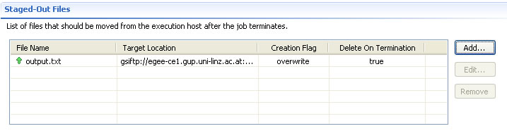

The Data Staging page provides an interface for specifying which files should be moved to the execution host (stage-in) before the job starts executing, and which files should be moved from the execution host (stage-out) after the job is executed.
This section allows to specify which files should be moved to the execution host before the job starts executing.
The table in this section provides an overview of the stage-in files along with
their attributes. All stage-in files are denoted with the
 icon.
icon.
Press Add... for opening an input dialog to insert a new stage-in file.
The input dialog allows you to specify the source location of the stage-in file by browsing remote file systems.
A Source Location specifies the location (directory) of the stage-in file on a remote host. The Source location is optional, but if specified, it should be provided using a URI.
A File Name is mandatory if a stage-in file is specified. The File Name, specifies the local name of the stage-in file on the execution host. The File Name is of type "String".
A Creation Flag is mandatory if a a stage-in file is specified. It specifies, whether the file created on the execution host is allowed to overwrite or append to and existing file. Based on the JSDL Specification v.1.0 the default value for the Creation Flag is the JSDL Editor is set to "overwrite".
A Delete On Termination specifies whether the stage-in file should be deleted after the job executes.
You can browse remote file systems which are available to your Grid Project
by clicking the  button next to the location
text field.
You can create also new connections to remote file systems which are not available
to your Grid Project by clicking
button next to the location
text field.
You can create also new connections to remote file systems which are not available
to your Grid Project by clicking
 .
.
This section allows to specify which files should be moved from the execution host after the job terminates.
 The table in this section provides an overview of the stage-out files along with
their attributes. All stage-out files are denoted with the
 icon.
icon.
Press Add... for opening an input dialog to insert a new stage-out file.
The input dialog allows you to specify the target location of the stage-out file by browsing remote file systems.
A Target Location specifies the location (directory) of the stage-out file on a remote host. The Target location is optional, but if specified, it should be provided using a URI.
A File Name is mandatory if a stage-out file is specified. The File Name, specifies the local name of the stage-out file on the execution host. The File Name is of type "String".
A Creation Flag is mandatory if a a stage-out file is specified. It specifies, whether the file created on the execution host is allowed to overwrite or append to and existing file. Based on the JSDL Specification v.1.0 the default value for the Creation Flag is the JSDL Editor is set to "overwrite".
A Delete On Termination specifies whether the file to be stage-out should be deleted after it has been send to the target location.
You can browse remote
file systems which are available to your Grid Project by clicking the
button next to the location text field.
You can create also new connections to remote file systems which are not available
to your Grid Project by clicking
 .
.